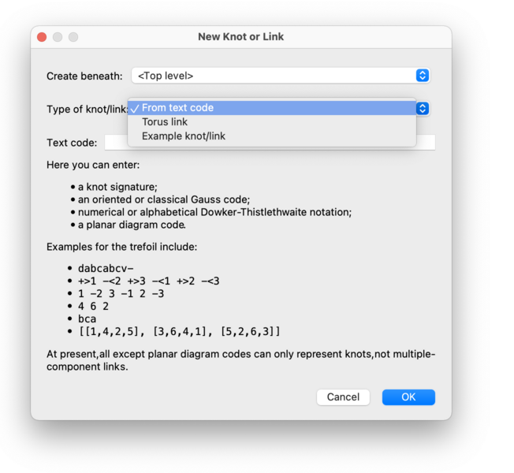
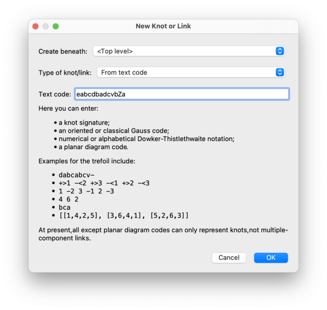
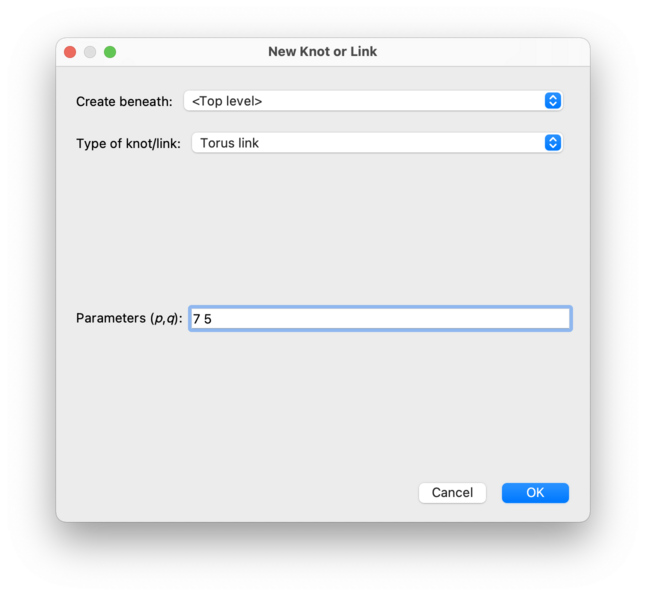
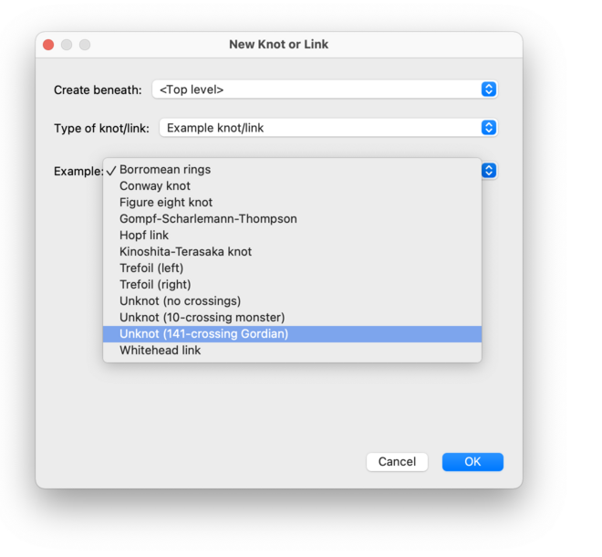

Knots and Links | |
| Prev | Next |
Table of Contents
Regina offers native support for knots and links. Regina collectively refers to all such objects as links: a link may have multiple components, or just one component (i.e., a knot), or zero components (i.e., the empty link).
A link is stored using a link diagram,
which consists of n crossings and
2n strands that connect them, possibly
with some additional unknot components that have no crossings at all.
Link diagrams are embedded in the sphere. This means that Regina does keep track of left versus right, but it does not keep track of which cell is the “outer” cell of the diagram.
Links in Regina are oriented. This means that Regina keeps track of a “direction of travel” around each component of the link.
To create a new link, use the → menu item (or the corresponding toolbar button).
You will be asked what type of link to create (see the drop-down box below). Here we walk through the various options.

This will reconstruct a link from one of several common text codes. At present, Regina can only reconstruct single-component knots from most types of codes; the exception is planar diagram codes, which support links with multiple components.

The codes that Regina understands include:
Regina's own knot signatures, which are compact sequences of letters, digits and/or punctuation that uniquely identify a knot up to combinatorial isomorphism. Here combinatorial isomorphism includes relabelling the crossings, reflecting or rotating the entire diagram, and/or reversing the orientation of the knot (i.e., the direction of travel).
An example is
dabcabcv-, which represents the trefoil.Knot signatures played a significant role in the 19-crossing knot tabulation [Bur20].
Classical Gauss codes, which are sequences of integers that encode the crossings that you pass through as you traverse the knot from an arbitrary starting point. Crossings are numbered consecutively from 1 to
n(but in any order), and each crossing is written as a positive or negative integer according to whether you pass over or under it.An example of a Gauss code is
1 -2 3 -1 2 -3, which represents the trefoil.Classical Gauss codes are commonly used in the literature. Be aware that they do not specify the orientation of the diagram, and (more importantly) for composite knots they may not even uniquely define the topology of the knot. If this is a problem, consider using either oriented Gauss codes or knot signatures instead.
Oriented Gauss codes, which likewise encode the crossings that you pass through as you traverse the knot, but this time with more precise information. Again the crossings are numbered consecutively from 1 to
n(but in any order); each crossing is then written with a sign (plus or minus), an arrow (either less-than or greater-than), and an integer. The sign indicates whether you pass over (+) or under (-) the crossing, and the arrow indicates whether the other strand of the crossing passes from right-to-left (<) or left-to-right (>).An example is
+>1 -<2 +>3 -<1 +>2 -<3, which represents the left-hand trefoil.Oriented Gauss codes were introduced by Andreeva et al., and are described as part of their Book Knot Simplifier. Unlike classical Gauss codes, they preserve the orientation of the diagram, and they correctly identify the topology of composite knots.
Dowker-Thistlethwaite notation, which is essentially a more streamlined variant of classical Gauss codes. They have played an important historical role in knot tabulation; see Adams [Ada94] for some history and also a precise description of the format.
Regina understands both the numerical and alphabetical variants of Dowker-Thistlethwaite notation. The numerical variant involves a sequence of
neven signed integers. The alphabetical variant transforms this into a compact text string by replacing the positive integers2,4,6,… with lower-case lettersa,b,c,…, and replacing the negative integers-2,-4,-6,… with upper-case lettersA,B,C,…. The alphabetical variant can only be used to describe knots with 26 crossings or fewer.Examples are
4 6 2orbca, both of which represent the trefoil.Like classical Gauss codes, Dowker-Thistlethwaite notation does not specify the orientation of the diagram, and (more importantly) for composite knots may not uniquely define the topology of the knot. If this is a problem, consider using either oriented Gauss codes or knot signatures instead.
Planar diagram codes, which are sequences of 4-tuples that encode the local connections around each crossing. Unlike the other code types described here, planar diagram codes can encode multiple-component links.
In a planar diagram code for a link with
ncrossings, the strands are numbered 1,…,2n. Each 4-tuple represents a single crossing, and lists the four strands that meet at that crossing in counter-clockwise order, beginning with the incoming lower strand. Regina will number the crossings 0,…,(n-1) in the same order as the tuples are presented.An example of a planar diagram code is
[[1,4,2,5], [3,6,4,1], [5,2,6,3]], which represents the left-hand trefoil.You may separate the integers with any combination of whitespace, commas, round/square/curly brackets, and/or the special symbols
PD,X,Xp,XmorP(these symbols appear in other sources, but have no special meaning for Regina). So, for example, the left-hand trefoil above could instead be presented asPD[X[1,5,2,4], X[3,1,4,6], X[5,3,6,2]], or just1 5 2 4 3 1 4 6 5 3 6 2.Planar diagram codes are used in the Knot Atlas (for example). They have two limitations: they cannot represent zero-crossing unknot components; also, if the link has a component that consists entirely of over-crossings (i.e., an unknot placed “on top” of the diagram) then the orientation of that component is not uniquely determined.
If you already have a knot or link and you wish to view these different text codes, you can do this through the codes tab.
Caution
Knot signatures and Dowker-Thistlethwaite notation are both case sensitive! Be sure that you are entering upper-case and lower-case correctly (or better, copy and paste the text using the clipboard if you can).
Regina can create a new torus link with the given parameters
(p, q).
This essentially involves drawing a
(p, q)
curve on an unknotted torus in 3-space and then removing the torus.

The parameters
p and q
must be non-negative integers. They do not need to be coprime:
if their greatest common divisor is
d > 1 then the result will
be a link with d components.
Tip
You do not need to separate the lens space parameters with commas; any punctuation, or even just spaces, will suffice.
Like triangulations, Regina offers a selection of ready-made sample knots and links which you can use to experiment with Regina. Simply select an example from the list provided and Regina will build the corresponding link for you.

| Prev | Contents | Next |
| Analysis | Up | Analysis |